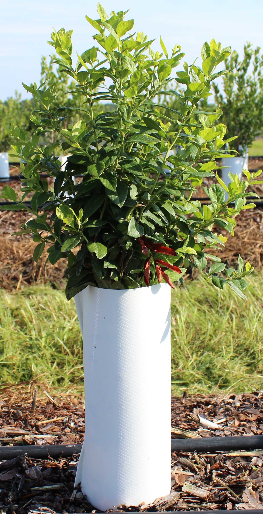
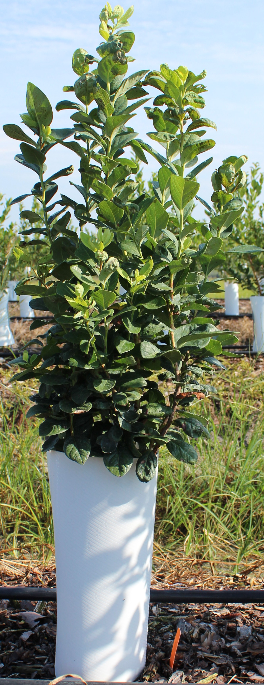
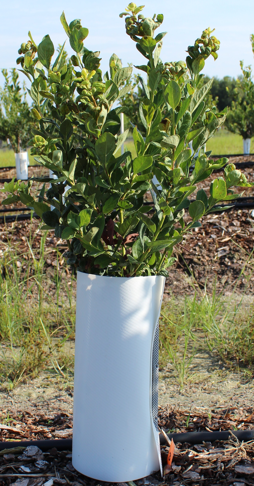

New growth
Soft young leaves at the top. Often lime, pale, or silver. Only these get healthy / injured / curl. Pale silver tips are still new growth.
Three real plants from the 36-photo set. Each square below is a teaching call using the protocol. You are not scoring the plant 1 to 5. Look at the square. Use the whole plant only to see if you are at the top (usually new growth) or lower (usually old leaves).
Soft young leaves at the top. Often lime, pale, or silver. Only these get healthy / injured / curl. Pale silver tips are still new growth.
Thicker, darker, mid or lower canopy. Even if bronze, spotted, or curled: mark Old leaves and stop. That damage is not in the plant score.
Tube, pot, tag, sky, dirt, empty blur. A little leaf on the tube is still Not a leaf if you cannot judge the flush.
Mixed young flush is injured. If part of the young leaves is hurt and part is clean, mark injured. Lime crinkle with no bronze and no cup is healthy. Curl is shape, not color. Injured and flat is still injured.

The lime crown is new growth and looks mostly clean. The dark body is old leaves. A reddish cluster just above the tube is still old tissue. Do not mark that cluster injured. A scout whole-plant score on this photo was 1. That is context only. Do not put a 1 on a square.

The pale twisted tips are new growth and injured. The dark mid and lower leaves are old. Score the tip. Do not chase injury down into the old canopy. A scout score on this photo was 2. Context only.

The bunched, bronzed tips are new growth, injured, curl yes. The large dark leaves under them are old. The dead brown leaf by the tube is old, not a flush injured mark. A scout score on this photo was 4. Context only. You still do not put a 4 on a square.